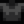

Coal
| Coal | |
| A combustible rock that is useful for crafting and smelting. | |
| Information | |
| Source | Mining • Dust Sprite • Blacksmith • Charcoal Kiln • Panning • Recycling Machine • Artifact Spot • Fishing Treasure Chest • Geodes • Bookseller |
| Sell Price | |
Coal is a basic resource. It can be obtained primarily from mining rocks, killing Dust Sprites, purchasing from the Blacksmith, using a Charcoal Kiln, or panning. Coal may also be obtained in a number of other ways.
Coal is used in some crafting recipes. It is also necessary for smelting items in a Furnace or Heavy Furnace and smoking fish in a Fish Smoker.
Locations
- Mining rocks — both in the Mines and anywhere else on the map. The chance to obtain Coal from most rocks is affected by daily luck, luck buffs, Mining level, the Prospector Profession, and one of the powers from the Statue Of The Dwarf King.[1]
- Mining Coal Nodes, which can be found in the Quarry, Quarry Mine, and Volcano Dungeon.
- Opening coal-filled minecarts and brown miner's bags on certain floors of the Mines and random floors in the Skull Cavern. Each minecart or bag contains 6 Coal. Minecarts in the Mines refresh their contents each year, while bags do not.
- Breaking crates and barrels in the Mines, Quarry Mine, Skull Cavern, and Volcano Dungeon.
- Using Charcoal Kilns to convert 10 Wood into 1 Coal.
- Recycling Trash (30% chance) or Driftwood (25% chance) in a Recycling Machine.
- Killing Dust Sprites between Floors 41-79 of the Mines (50% chance of dropping Coal).
- Players may use the elevator to quickly and repeatedly travel between floors ending in 0 or 5 to spawn more Dust Sprites.
- Using Monster Musk and wearing a Burglar's Ring may be helpful as well.
- Killing Red, Purple, and Black Slimes, Stone Golems, Wilderness Golems, Iridium Golems, Metal Heads, Shadow Brutes, and Shadow Shamans. Each monster has a 10% chance to drop Coal.
- Digging up Artifact Spots in the Backwoods, the Mountains, or the Farm.
- Panning in any area.
- Opening regular or golden Fishing Treasure Chests.
- Opening any of the 4 types of geodes.
- The Blacksmith sells Coal for
 150g during Year 1 or 250g from Year 2 onwards.
150g during Year 1 or 250g from Year 2 onwards. - The Bookseller trades 20 Coal for 1 Mining Monthly.
- The Traveling Cart may sell Coal for 100–1,000g.
- Up to 50 Coal may be purchased from Clint's shop at the Desert Festival for
 5 Calico Eggs each.
5 Calico Eggs each. - The Garbage Can outside of the Blacksmith may contain Coal.
- If a Fruit Tree is struck by lightning, it will produce Coal instead of fruit for 4 days before returning to normal.
- Trains may randomly drop Coal.
Coal purchased at the Blacksmith costs  150g during Year 1, so it is cheaper in Year 1 to buy 10 wood for
150g during Year 1, so it is cheaper in Year 1 to buy 10 wood for  100g from Robin at the Carpenter's Shop and convert that wood into coal in the Charcoal Kiln. After Year 1, wood pricing increases to
100g from Robin at the Carpenter's Shop and convert that wood into coal in the Charcoal Kiln. After Year 1, wood pricing increases to  50g per piece but coal increases to only
50g per piece but coal increases to only  250g, so it is cheaper to purchase coal directly.
250g, so it is cheaper to purchase coal directly.
Crafting
| Image | Name | Description | Ingredients | Recipe Source |
|---|---|---|---|---|
| Bee House | Place outside and wait for delicious honey! (Except in Winter). | |||
| Preserves Jar | Turns vegetables into pickles and fruit into jam. | |||
| Warrior Ring | Occasionally infuses the wearer with "warrior energy" after slaying a monster. | |||
| Cherry Bomb | Generates a small explosion. Stand back! | |||
| Bomb | Generates an explosion. Watch out! | |||
| Explosive Ammo | Fire this with the slingshot. | |||
| Wicked Statue | There's something unsettling about the looks of this statue. | |||
| Wooden Brazier | Provides a moderate amount of light. | |||
| Stone Brazier | Provides a moderate amount of light. | |||
| Barrel Brazier | Provides a moderate amount of light. | |||
| Stump Brazier | Provides a moderate amount of light. | |||
| Gold Brazier | Provides a moderate amount of light. | |||
| Carved Brazier | Provides a moderate amount of light. | |||
| Scarecrow | Prevents crows from attacking your crops. Has a limited radius (about 8 "tiles"). | |||
| Seed Maker | Place crops inside to produce a varying amount of seeds. Doesn't work with fruit tree crops. | |||
| Slime Egg-Press | Compresses 100 pieces of slime into a slime egg. It's a miracle of science! | |||
| Cookout Kit | Use this to create a cooking campfire, allowing you to cook on-the-go! |
Gifting
| Villager Reactions
| |
|---|---|
| Neutral | |
| Dislike | |
| Hate | |
Bundles
Coal is not used in any bundles.
Tailoring
Coal is used in the spool of the Sewing Machine with Cloth in the feed to create a 
Quests
- Ten Coal may be requested by Ice Pip or Stonefish in a Fish Pond quest to increase the capacity of the pond from 5 to 7.
- Ten Coal are requested by Midnight Carp in a Fish Pond quest to increase the capacity of the pond from 3 to 5.
Trading
- 20 Coal can be traded at the Raccoon Wife's Shop for 1 Mahogany Seed.
- 999 Coal can be traded at the Desert Trader for the Dark Piano.
References
- ↑ See MineShaft::checkStoneForItems, GameLocation::breakStone, and GameLocation::OnStoneDestroyed in the game code.
History
- 1.3.27: Increased price from 150g in Year 1 to 250g in Year 2+.
- 1.4: Can now be used in Tailoring and to create a Wilted Bouquet. Can be requested in Fish Pond quests.
- 1.5: Used to operate the Geode Crusher. Used as an ingredient to the Cookout Kit recipe. No longer used as an ingredient to the Skull Brazier recipe.
- 1.6: Used to operate the Fish Smoker and Heavy Furnace. Can be obtained from Iridium Golems and Coal Nodes. Can be purchased from Clint at the Desert Festival. Geode Crushers no longer require coal to operate. Can now be traded for the Dark Piano. Is now requested by Midnight Carp in a Fish Pond quest. Powers from the Statue Of The Dwarf King may now affect coal drops.
- 1.6.4: Coal carts in the Mines now "refresh" at the start of each year.
- 1.6.6: Added Coal for Mahogany Seed trade at the Giant Stump.
| Resources | |
|---|---|
| Basic | Battery Pack • Bone Fragment • Cinder Shard • Clay • Coal • Fiber • Hardwood • Moss • Stone • Wood |
| Ore | Copper Ore • Iron Ore • Gold Ore • Iridium Ore • Radioactive Ore |
| Bars | Copper Bar • Iron Bar • Gold Bar • Iridium Bar • Radioactive Bar • Refined Quartz |